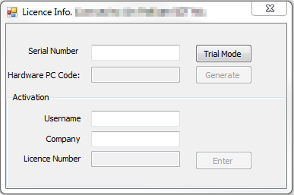

UAS Network Software Installation¶
Hardware Requirements¶
Server OS: Any version of MS Server 2008 and above
Disk Space: 250MB for the application and 10-20 GB for user data
Memory (RAM): 4GB
Server Software¶
Please use the version of PostgreSQL provided by SDT:
http://ftp.sdt.be/pub/Software/Ultranalysis%20Suite%203/Database/postgresql-13.1-x64.exe
The software is compatible with the current version of UAS software and the installer is tuned for network servers.
Installation is straightforward, please follow the default prompts and apply those settings.
During the installation, the installer will ask to set the password for the ‘postgres’ user account. This account is required for starting and stopping the postgresql database service.
Set the password to the following: PasswordPassword123
The client application uses this password by default. The ‘postgres’ user account serves no other purpose and requires no administrative privileges.
Warning
At the end of the installation, the installer asks to install StackBuilder. We do NOT use StackBuilder for UAS and it is therefore, not necessary to install.
PostgreSQL Service Configuration¶
The following information is required to ensure a successful connection between the client/server applications:
- IP address of the server - this is necessary for the client PCs to access the server
- IP ranges for the client PCs - any valid ip range for the clients PCs that will be connecting to the database. This can be multiple address ranges.
Allow Client PC Access¶
To allow a UAS client application to connect to the database you MUST** edit the **pg_hba.conf configurtation file and add all the client IP ranges collected in Step 2 above.
This file is located here : C:\Program Files\PostgreSQL\13\data
Edit the section at the bottom of the file that looks like this:
# TYPE DATABASE USER ADDRESS METHOD
# "local" is for Unix domain socket connections only
local all all scram-sha-256
# IPv4 local connections:
host all all 127.0.0.1/32 scram-sha-256
# IPv6 local connections:
host all all ::1/128 scram-sha-256
# Allow replication connections from localhost, by a user with the
# replication privilege.
local replication all scram-sha-256
host replication all 127.0.0.1/32 scram-sha-256
host replication all ::1/128 scram-sha-256
host all all 0.0.0.0/0 scram-sha-256
IPv4 local connections¶
This section of the config file is where the client ranges are added. You can add clients indivually or as ranges:
For an individual PC:
# IPv4 local connections:
host all all 127.0.0.1/32 scram-sha-256
host all all 10.10.12.26 trust
For a range of IP addresses
# IPv4 local connections:
host all all 127.0.0.1/32 scram-sha-256
host all all 10.10.12.0/24 trust
Info
More detailed documentation can be found here at the PostgreSQL 8.4 Documentation Site
Database Service Configuration¶
The postgresql.conf controls setting for the database service. The file can be found here:
C:\Program Files (x86)\PostgreSQL\13\data
Make sure these setting changes have been made:
listen_addresses = to ‘*’
port = 5432
Those are the minimal changes required to make the service run.
Error Logging¶
If you are having issues with the client PC's connecting, turn on the postgres service Error Logging. By default this is set to minimal to prevent it from filling up hard drive space unnecessarily.
Edit the postgresql.conf file and find the section titled ‘ERROR REPORTING AND LOGGING’. Set the values to those listed below:
#------------------------------------------------------------------------------
# ERROR REPORTING AND LOGGING
#------------------------------------------------------------------------------
.
.
.
log_destination = stderr
logging_collector = on
log_directory = pg_log
client_min_messages = debug3
log_connections = on
log_dsconnections = on
log_hostname = on
Info
For a more detailed explanation of the Error Log settings, please refere to the Postgres Documentaion - Errpr Reporting and Logging
All log data is stored in the ‘pg_log’ folder with one file per day. Open the file in notepad to view any connection errors all of these can be turned off once the clients are setup
Client Software Installation¶
Run the installation program on the USB disk provided or download the software here:
Choose the second option to connect to a remote database:
The client program is installed in two parts:
- Install the necessary support libraries to run Ultranalysis Suite: .NET framework and Crystal Reports engine
- Install the Ultranalysis Suite Software
Accept Defaults
Follow the prompts, there are no setting required at this stage.
License Client PC's¶
Once the installation is complete, you must launch Ultranalysis Suite to license the software. The license screen will appear until it has been properly configured. The software can only run in Demo mode without a proper license and will have liimited functionality.
Ultranalysis Suite is licensed per PC and uses a combination of the serial number and various hardware id's on the client PC to generate a license code. Each end user will be emailed a serial number and instructions on how to obtain a license number.
Enter the Serial Number and click on ‘Generate’ to create a Hardware PC Code.
To obtain a license number go to this webpage:
https://www.sdt.be/extranet/licenses/activate
You will need the Serial Number and Hardware PC Code to continue. Once you have the license number return to the Ultranaly Suite software to enter all three numbers and your name and company name:

Set Database Connection¶
Once you have successfully licensed the software you will be prompted to create a database connection:
Click the checkbox for the 'Advanced Settings' and change the 'Host' from 'localhost' to the IP address of the postgres database server. If you changed the password for the postgres user account on the server you will need to change the password here, otherwise leave the settings as they are and click 'Apply'. You should receive a message that the database connection was created successfully, if you do not, go back through your settings and make sure all IP addresses are correct and that you have added the client IP ranges to the configuration files on the server.
Resources¶
Ultranaysis Suite Standard Installation Instructions
Ultranalysis Suite User Manual
ftp://ftp.sdt.be/pub/Software/Ultranalysis%20Suite/UserManuals/LatestVersion/UAS_manual_en.zip
Automated backups
http://wiki.postgresql.org/wiki/Automated_Backup_on_Windows
The above is generic for any Postgres installation - but should work fine in this instance.
The full documentation for Postgres is here: